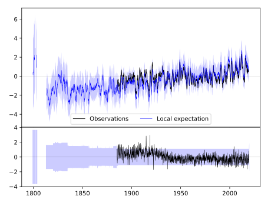
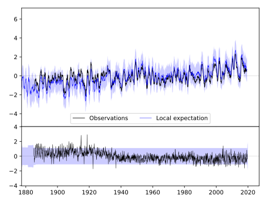
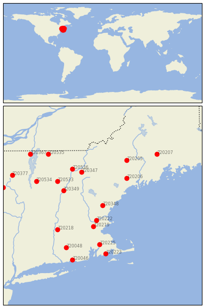

DURHAM [USA]


| Neighbour | Name | Country | Distance | Lon/Lat | Years |
|---|
| 720348 | DURHAM | USA | 0 | -71.0, 43.2 | 1884-2019 |
| 720222 | LAWRENCE | USA | 57 | -71.2, 42.7 | 1856-2019 |
| 720219 | BEDFORD | USA | 81 | -71.3, 42.5 | 1885-2019 |
| 720349 | HANOVER | USA | 118 | -72.3, 43.7 | 1834-2019 |
| 720206 | LEWISTON | USA | 118 | -70.2, 44.1 | 1886-2019 |
| 720347 | BETHLEHEM 2 | USA | 134 | -71.7, 44.3 | 1887-2019 |
| 720225 | TAUNTON | USA | 144 | -71.1, 41.9 | 1871-2019 |
| 720533 | CHELSEA | USA | 150 | -72.5, 44.0 | 1885-2019 |
| 720218 | AMHERST | USA | 151 | -72.5, 42.4 | 1836-2019 |
| 720536 | SAINT JOHNSBURY | USA | 155 | -72.0, 44.4 | 1853-2019 |
| 720223 | NEW BEDFORD | USA | 178 | -70.9, 41.6 | 1812-2019 |
| 720205 | FARMINGTON | USA | 178 | -70.2, 44.7 | 1886-2019 |
| 720048 | STORRS | USA | 184 | -72.2, 41.8 | 1884-2019 |
| 720534 | CORNWALL | USA | 198 | -73.2, 44.0 | 1887-2019 |
| 720046 | GROTON | USA | 216 | -72.0, 41.4 | 1884-2019 |
| 720207 | CORINNA | USA | 237 | -69.2, 44.9 | 1885-2019 |
| 720535 | ENOSBURG FALLS | USA | 237 | -72.8, 44.9 | 1884-2019 |
| 720377 | LAKE PLACID 2 S | USA | 265 | -74.0, 44.2 | 1887-2019 |
| 720367 | CHAZY | USA | 269 | -73.4, 44.9 | 1873-2019 |
| 720375 | INDIAN LAKE 2SW | USA | 274 | -74.3, 43.8 | 1892-2019 |